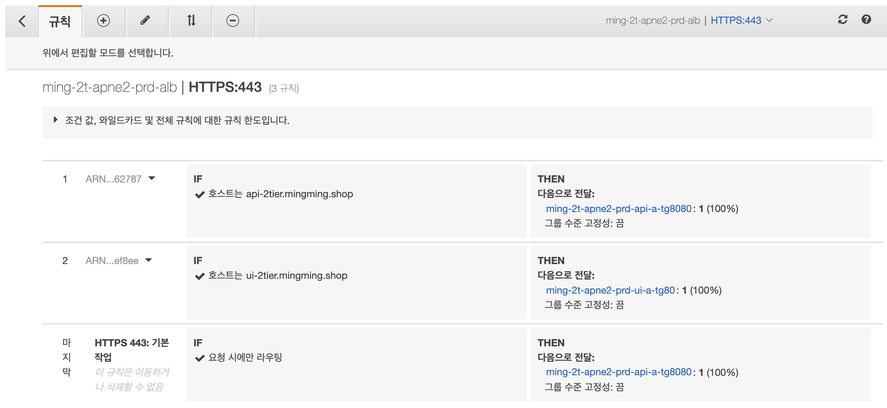
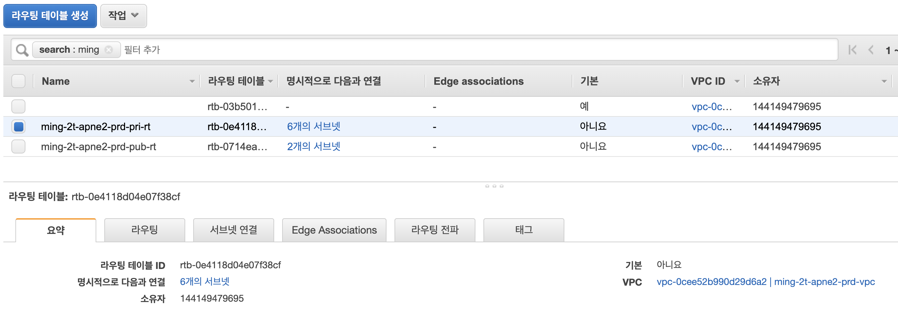

infra-2tier-services Modules
modules는 elb, vpc로 구성되어 있습니다.
1. ELB
infra-2tier-base에서 기구축한 Application Load Balancer(ming-2t-apne2-prd-alb) 를 참조하여, listener와 listener rule을 추가합니다.
resource "aws_alb_listener" "alb-listener443" { -- ALB listener 설정
load_balancer_arn = var.alb_id -- 기구축된 ALB 참조
port = 443 -- 포트
protocol = "HTTPS" -- 프로토콜
certificate_arn = var.acm_arn -- HTTPS 사용시 설정
...
}
resource "aws_alb_listener_rule" "alb-listener443-rule" { -- ALB listener rule 설정
listener_arn = aws_alb_listener.alb-listener443.arn -- rule을 attach할 listener
action {
target_group_arn = var.api-a-tg8080.arn -- ALB와 연결될 target group
}
condition {
host_header {
value = [ var.hosts.api ] -- header 설정
}
}
...
}
해당 ALB에 api listener rule과 ui listener rule이 추가된 모습입니다.

2. VPC
infra-2tier-base에서 기구축한 VPC(ming-2t-apne2-prd-vpc) 를 참조하여, subnet과 route table을 생성합니다.
resource "aws_subnet" "pri-sn" {
vpc_id = var.vpc_id
count = length(var.pri_sn_list)
cidr_block = lookup(var.pri_sn_list[count.index], "cidr_block")
availability_zone = lookup(var.pri_sn_list[count.index], "availability_zone")
depends_on = [ aws_route_table.pri-rt ]
...
}
resource "aws_route_table" "pri-rt" {
vpc_id = var.vpc_id
count = length(var.private_rt_tag_names)
depends_on = [ var.igw_id, var.nat_id ]
route {
cidr_block = "0.0.0.0/0"
nat_gateway_id = var.nat_id
}
...
}
해당 VPC를 참조하면서 private subnet, api subnet, ui subnet, private route-table 등이 생성된 모습입니다.
